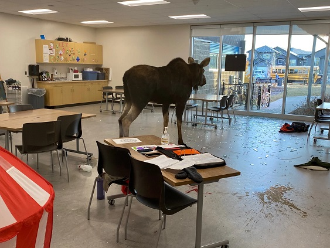

Один ученик получил небольшие повреждения.
В канадском Саскатуне сотрудникам Министерства охраны окружающей среды пришлось вывозить из школы Сильвии Федорук живого лося.
Животное ворвалось в один из классов, разбив окно, сообщает ABC News. В тот момент там находились более десятка детей с дошкольной программы.
В сети появились фото очевидцев, на которых лось спокойно стоит посреди класса в окружении осколков, а также сидит за стеклянной дверью.
Когда детей благополучно вывели из класса, сотрудники Министерства охраны окружающей среды Саскачевана усыпили животное, погрузили его в кузов грузовика, вывезли в безопасное место и отпустили. По данным властей, никто из людей серьезно не пострадал, пишет CBC. Один ученик был незначительно ранен, но медицинская помощь ему не потребовалась.